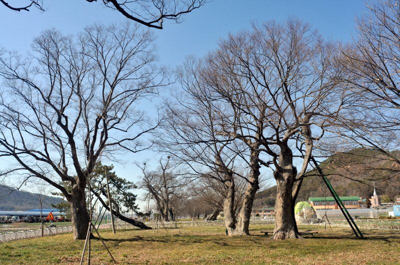

함평 재생에너지 특구 추진위 "345kV 변전소 못 잡으면 8GW·RE100 산단 2년 넘게 늦어져"…27일 기자회견·11월 3일 결의대회 예정

오민수 상임대표 군민 호소문, 변전소 확보를 4대 과제 맨 앞에…심의 결과는 추진위 설명으로 12월 말~내년 1월 초 전망, 특구·변전소·산단은 정해진 것 없어
전남 함평군을 8GW급 재생에너지 생산기지 특구로 지정해 달라며 서명운동을 벌이고 있는 민간 추진위원회가 345kV 재생에너지 변전소 유치를 첫째 과제로 내걸고 군민 결집을 호소했다. '함평군 재생에너지 생산기지 특구지정 범군민 추진위원회' 오민수 상임대표는 25일 군민 호소문을 내고 ▲345kV 변전소 확보 ▲8GW 복합 재생에너지 생산기지 조성 ▲RE100 국가산업단지 100만 평 유치 ▲국회 특별법 제정과 국가특구 지정을 4대 과제로 제시했다. 추진위 설명으로는 함평군이 지난해 345kV 변전소 유치를 신청했고 심의 결과는 12월 말에서 내년 1월 초 사이 나올 것으로 보이며, 오 대표는 유치에 실패하면 생산기지와 국가산단 조성이 최소 2년 이상 늦어지고 반도체 후공정 같은 산업 유치에도 차질이 생길 수 있다고 주장했다. 그는 발전 계획이 있어야 변전소의 필요성을 입증할 수 있고 송전망이 갖춰져야 대규모 발전 사업과 산단도 성공할 수 있다며 "345kV 변전소와 8GW 재생에너지 생산기지는 따로따로 갈 수 없는 하나의 운명공동체"라고 말했다. 추진위는 27일 오전 전남광주통합특별시의회 기자실에서 기자회견을 열고, 11월 3일에는 함평군 국민체육센터에서 군민 1,500여 명 규모의 설명회와 결의대회를 열 예정이다. 다만 변전소 심의 일정과 사업 지연 전망은 추진위 측의 설명이며, 특구 지정과 변전소 유치, 국가산단 조성은 아직 정해진 것이 없고 관계기관의 심의와 정책 결정에 달려 있다.
시민에너지 관점
변전소가 없으면 재생에너지도 없다는 추진위의 지적은 정확하고, 계통이 지역 재생에너지의 첫 관문이라는 점을 주민 쪽이 먼저 꺼내 들었다는 데 의미가 있다. 그러나 송전망이 열리면 땅과 접속 용량을 먼저 차지하는 쪽은 대개 자본이 큰 외부 사업자이고, 스코틀랜드에서는 육상풍력단지 105곳이 최근 5개 회계연도에 낸 세후이익 28억3,000만 파운드 가운데 90% 가까이가 기업 주주 배당으로 나갔다는 분석이 나왔다. 변전소가 들어서야 지역 개발이 앞당겨진다는 기대는 이해할 만하지만, 새 변전소의 용량을 누가 쓰느냐를 정하지 않으면 군민 소득과 햇빛연금은 구호에 그칠 수 있다. 함평이 변전소를 요구한다면 새 접속 용량의 일정 몫을 주민이 지분을 가진 발전소에 먼저 배정하라는 원칙도 함께 요구해야 한다.
출처: IBN일등방송 2026-10-25 강창우 기자 원문 보기
咸平・再生エネ特区推進委「345kV変電所を確保できなければ8GW・RE100産業団地は2年以上遅れる」…27日に記者会見、11月3日に決起大会予定
オ・ミンス常任代表が郡民への呼びかけ文、変電所確保を4大課題の筆頭に…審査結果は推進委の説明で12月末〜来年1月初めの見通し、特区・変電所・産業団地は何も決まっていない
韓国全羅南道咸平郡を8GW級の再生可能エネルギー生産基地特区に指定するよう求めて署名運動を進めている民間の推進委員会が、345kV再エネ変電所の誘致を最優先課題に掲げ、郡民に結集を呼びかけた。「咸平郡再生エネルギー生産基地特区指定汎郡民推進委員会」のオ・ミンス常任代表は25日、郡民への呼びかけ文を発表し、▲345kV変電所の確保 ▲8GWの複合再エネ生産基地の造成 ▲RE100国家産業団地100万坪の誘致 ▲国会での特別法制定と国家特区指定――の4つを核心課題として示した。推進委の説明によると、咸平郡は昨年345kV変電所の誘致を申請しており、審査結果は12月末から来年1月初めにかけて出る見通しで、オ代表は誘致に失敗すれば生産基地と国家産業団地の造成が最低2年以上遅れ、半導体後工程などの産業誘致にも支障が出かねないと主張した。オ代表は、発電計画があってこそ変電所の必要性を立証でき、送電網が整ってこそ大規模発電事業と産業団地も成功できるとして、「345kV変電所と8GW再エネ生産基地は別々には進められない一つの運命共同体だ」と述べた。推進委は27日午前に全南光州統合特別市議会の記者室で記者会見を開き、11月3日には咸平郡国民体育センターで郡民約1,500人規模の説明会と決起大会を開く予定だ。ただし変電所の審査日程と事業遅延の見通しは推進委側の説明であり、特区指定や変電所誘致、国家産業団地の造成はまだ何も決まっておらず、関係機関の審査と政策判断にかかっている。
市民エネルギーの視点
変電所がなければ再エネもないという推進委の指摘は正確で、系統が地域の再エネにとって最初の関門であることを住民側が先に持ち出した点に意味がある。しかし送電網が開かれると、土地と接続容量を先に押さえるのはたいてい資本力のある外部事業者であり、スコットランドでは陸上風力発電所105カ所が直近5会計年度に上げた税引き後利益28億3,000万ポンドのうち9割近くが企業株主への配当に回ったとの分析が出ている。変電所ができてこそ地域開発が早まるという期待は理解できるが、新しい変電所の容量を誰が使うのかを決めなければ、郡民の所得や「太陽光年金」はスローガンで終わりかねない。咸平が変電所を求めるのなら、新たな接続容量の一定割合を住民が持ち分を持つ発電所に優先して割り当てるという原則もあわせて求めるべきだ。
出典: iBN一等放送 2026-10-25 カン・チャンウ記者 原文を読む
咸平可再生能源特区推进委：“拿不下345kV变电站，8GW基地和RE100产业园将推迟2年以上”…27日召开记者会、11月3日举行誓师大会
Oh Min-su常任代表发表致郡民呼吁书，把确保变电站列为四大课题之首…据推进委说法审议结果预计12月底至明年1月初公布，特区、变电站、产业园均尚无定论
正在推动征集签名、要求把韩国全罗南道咸平郡指定为8GW级可再生能源生产基地特区的民间推进委员会，把引进345kV可再生能源变电站列为首要课题，呼吁郡民团结一致。“咸平郡可再生能源生产基地特区指定全郡民推进委员会”常任代表Oh Min-su（音译）25日发表致郡民呼吁书，提出四大核心课题：▲确保345kV变电站 ▲建设8GW复合可再生能源生产基地 ▲引进100万坪RE100国家产业园区 ▲由国会制定特别法并指定国家特区。据推进委介绍，咸平郡去年已申请引进345kV变电站，审议结果预计在12月底至明年1月初公布；Oh Min-su称，一旦引进失败，生产基地和国家产业园区的建设至少会推迟2年以上，半导体后段工序等产业的招商也可能受阻。他表示，有了发电计划才能证明建设变电站的必要性，有了输电网，大规模发电项目和产业园区才能成功，并说“345kV变电站和8GW可再生能源生产基地不能各走各的，是一个命运共同体”。推进委计划于27日上午在全南光州统合特别市议会记者室召开记者会，并于11月3日在咸平郡国民体育中心举行约1,500名郡民参加的说明会暨誓师大会。不过，变电站审议日程和项目推迟的预测只是推进委方面的说法，特区指定、变电站引进和国家产业园区建设都尚未确定，取决于有关机构的审议和政策决定。
市民能源视角
推进委指出“没有变电站就没有可再生能源”，这一点说得没错；由居民一方率先提出电网是地方可再生能源的第一道关口，也有其意义。但输电网一旦打开，最先占下土地和接入容量的往往是资本雄厚的外来开发商。在苏格兰，有分析显示105座陆上风电场在最近5个会计年度的税后利润28.3亿英镑中，近九成以股息形式流向了企业股东。期待变电站落地能加快地方开发可以理解，但如果不先定下新变电站的容量由谁使用，郡民收入和“阳光年金”就可能只停留在口号上。咸平既然要求建变电站，就应同时要求一项原则：新增接入容量中须有一定份额优先分配给居民持股的发电站。
来源: iBN一等广播 2026-10-25 Kang Chang-woo 查看原文
Hampyeong renewable zone campaign says missing out on a 345kV substation would delay 8GW hub and RE100 industrial park by over two years; press conference on Oct. 27 and rally on Nov. 3 planned
Co-chair Oh Min-su issues an appeal to residents, putting the substation first among four goals; the committee expects a review decision between late December and early January, but the zone, substation and industrial park are all undecided
A civic committee collecting signatures to have Hampyeong County in South Jeolla Province designated an 8GW renewable energy production zone has made winning a 345kV renewable energy substation its top priority and called on residents to rally behind the campaign. Oh Min-su, standing co-chair of the county-wide committee for the designation, issued an appeal to residents on Oct. 25 setting out four core goals: securing the 345kV substation, building an 8GW mixed renewable generation hub, attracting a 1-million-pyeong RE100 national industrial complex, and getting the National Assembly to pass a special act designating a national zone. According to the committee, the county applied last year to host the substation and a review decision is expected between late December and early January; Oh argued that failure would set back the generation hub and the industrial complex by at least two years and could also hurt efforts to attract industries such as semiconductor back-end processing. He said a generation plan is needed to prove the case for a substation, while large power projects and the industrial park can only succeed once transmission is in place, calling the 345kV substation and the 8GW hub "a single community of fate that cannot go separate ways." The committee plans to hold a press conference on the morning of Oct. 27 in the press room of the integrated Jeonnam-Gwangju special city council, followed on Nov. 3 by an information session and rally at the Hampyeong County National Sports Center for about 1,500 residents. The review timetable and the delay forecast are the committee's own account, however, and the zone designation, the substation and the industrial complex have not been decided; they depend on reviews and policy decisions by the relevant authorities.
Citizen Energy View
The committee is right that there is no renewable energy without a substation, and it matters that residents themselves are the ones pointing to the grid as the first gate for local renewables. But once transmission opens up, it is usually well-funded outside developers who lock up land and connection capacity first; in Scotland, an analysis found that nearly 90% of the £2.83 billion in after-tax profit made by 105 onshore wind farms over five financial years went out as dividends to corporate shareholders. The hope that a substation will speed up local development is understandable, but unless it is settled who gets to use the new capacity, resident income and "solar pensions" may remain slogans. If Hampyeong is asking for a substation, it should also demand a rule that a fixed share of the new connection capacity goes first to power plants in which residents hold equity.
Source: iBN Ildeung Broadcasting 2026-10-25 Kang Chang-woo Read the original